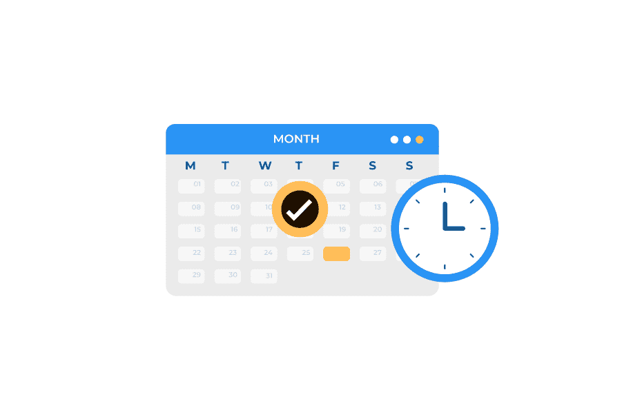
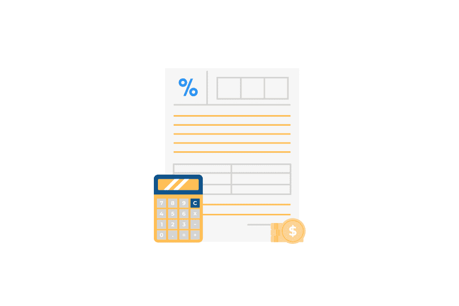

リベルクラフト法人向け研修サービス
AI・データ
サイエンス基礎講座
AI活用スキルを持ったDX人材を育成する
Anti Pattern
AI・データ活用における
よくある失敗
どんな企業・組織でもAI・データ活用の可能性はあるはずですが、データがあるから、
またはアウトソース先がいるから勝手に活用促進ができる、というわけではありません
Pattern
01
データがあるからと言って、
勝手にデータ活用ができるわけではない
-
どのようにデータを活用したり、そこからどうAI化すれば良いしょうか?
-
うちのデータは独自性が高いから、 きっと何か価値あるAIが作れるはず!
-
とりあえずデータを見てみましたが、 どうすればよいか全然わかりません...
-
困ったなぁ。。。。。。。
Pattern
02
自社のメンバーに最低限の知識がないと、
プロジェクトは成功しない
-
この前始めたAI・データ活用プロジェクト、うまくいっているかな!?
-
外注先の方が進めているようですが、 難しくて正直よくわかっていません....
-
少なくとも”どうAI・データ活用するか”の要件は決められそうかな?
-
実務で使えるAIの知識が全然ないので、 正直全く手がつけられないです....
-
どうしたものかなぁ。。。。。。。
How to success
企業において
AI・データ活用施策を
促進・成功させるために
AI・データ活用を促進していくために、専門人材との共通言語・知識を少しでも持つことで、
事業部門と技術部門の双方向による、知見習得や課題解決が促進しやすくなります。
How to success
企業において
AI・データ活用施策を
促進・成功させるために
「自社の課題や打ち手を考案できる」「AI・データサイエンスの最低限の知識がある」
「実務でどう活用すればよいか分かる」といったことがAI・データ活用で重要な要素となります。
現在
AI・データ活用はできない...
-
データがあるから何とかなるはず!!
課題や打ち手がないと何も始まらない
-
知識がないけどニュースや本で...
実務で必要な体系的な知識は付きにくい
-
活用できていないが誰かに頼めば...
ビジネスオーナーによる推進が必要
理想
推進・成功させられる!!!
-
自社の課題や打ち手を考案できる!!

どこに活用すれば良いかが明確に
-
AI・データサイエンスの知識がある!!
どう活用をすればよいかアイディアが湧く
-
実務でどう活用すれば良いかが分かる!
プロジェクトの推進ができる
Feature
本カリキュラムの特徴
組織でのAI・データ活用の促進・個人のAI・データサイエンススキルの向上に向けて、
弊社がご提供できるカリキュラムでは、主に以下のような特徴・強みをもっております。
短期間で、実務・ビジネスで活用できる
AI・データサイエンスの全知識を身につける!!
短期間で、実務・ビジネスで
活用できるAI・データサイエンスの
全知識を身につける!
-
実務で使えるAI活用スキルを、
わずか2時間〜14時間(1回〜7回)で学べる -
原理原則を押さえた基礎理解から、
実務で活用するための考え方まで幅広く網羅
-
01
AI・データ活用人材の データサイエンティスト が直接指導
-
02
データ分析・統計解析・ AI/機械学習・画像/テキスト 解析・レコメンド・最適化... と、幅広く体系的に学べる
-
03
現場・実務で活用するためのケーススタディを通じ、 自社ビジネス改善に繋げる
Target
想定の受講対象者
様々な業務を担当するビジネスパーソンに必要な、AI・データサイエンスを学ぶカリキュラムとなっており、
主に下記のような受講者がターゲット層として想定されます。
こんな方にお勧め
-
経営者・管理職(マネージャー)
- ・AI技術の活用で組織全体の業績向上を目指したい
- ・AI・データを活用したDXを推進していきたい
-
営業職
- ・高度な顧客セグメントや販売予測をしたい
- ・顧客ごとにパーソナライズした提案をしたい
-
企画職・マーケター
- ・需要予測により経営計画の精度をあげたい
- ・機械学習で顧客クラスタを見つけて戦略構築したい
-
店舗などの責任者
- ・在庫管理を最適化してロス削減の精度をあげたい
- ・商品配置を最適化して売上を最大化したい
-
人事職
- ・AIにより離職者を事前予測して離職率を下げたい
- ・社員の適性データから人材配置を最適化したい
-
CS(カスタマーサクセス)職
- ・AIやデータから解約顧客を早期に判別したい
- ・顧客満足度データからサービス改善案を見つけたい
Curriculum
授業内容の全体像
AI・データサイエンスの全体像から始まり、様々な分野の知識の理解、自社活用に向けた演習と、
実務で必要なスキルを一気通貫で学ぶことができるカリキュラムとなっています。

参考文献
ビジネスの現場で使える
AI&データサイエンスの全知識

Plan
授業内容の全体像
本カリキュラムでは、以下3パターンのプランをご用意しております。
| 梅 プラン | 竹 プラン | 松 プラン | |
|---|---|---|---|
| 講義回数 | 計1回×2時間 | 計4回×2時間 | 計7回×2時間 |
| 授業範囲 | AI・データサイエンス概論講座 |
データ分析の基礎知識を 学ぶ講座 |
座学+演習の フルパッケージ講座 |
| 想定対象者 授業スコープ |
|
|
人材開発支援助成金の |
Flow
お申込みから学習開始
までの流れ
本コースのご受講を希望される方は、下記の流れに沿って受講開始していただきます。
-
01
申請のお申込
助成金申請をご希望の方は、弊社担当者とともに、各種書類をご用意いただく必要があります。書類を用意の上、申請手続きをし、申請採択を受領し次第、受講手続きをいたします。
-
02
受講準備
受講開始に向けて準備をいたします。主に、御社コミュニケーションツールを通じた受講資料のご連携や受講生と授業日程の確定が必要となります。
 -
03
受講開始!
受講を開始いたします。受講中は、御社のコミュニケーションツールにて無制限に質問対応をいたします。予習や復習は、各自にてお願いいたします。
-
04
受講終了
受講が終了した月の翌月お支払いにてご請求をいたします。助成金をご利用の企業様は、受講が無事終了し次第、助成金受取の手続きをお願いいたします。 なお、教材は半永久的にご利用いただいて大丈夫です。

Contact
お問い合わせフォーム
お問い合わせ後、弊社担当よりご連絡を差し上げます。
日程調整の上、オンラインでのお打ち合わせを設定いたします
すぐに日程調整をして打ち合わせ希望の方は、
以下よりご予約が可能です
とりあえずメールで連絡したい！という方は、
こちらの連絡先に、何でもご気軽にお問合せください
うちにはデータがあるから、流行りの AI活用をしてみたいよね!